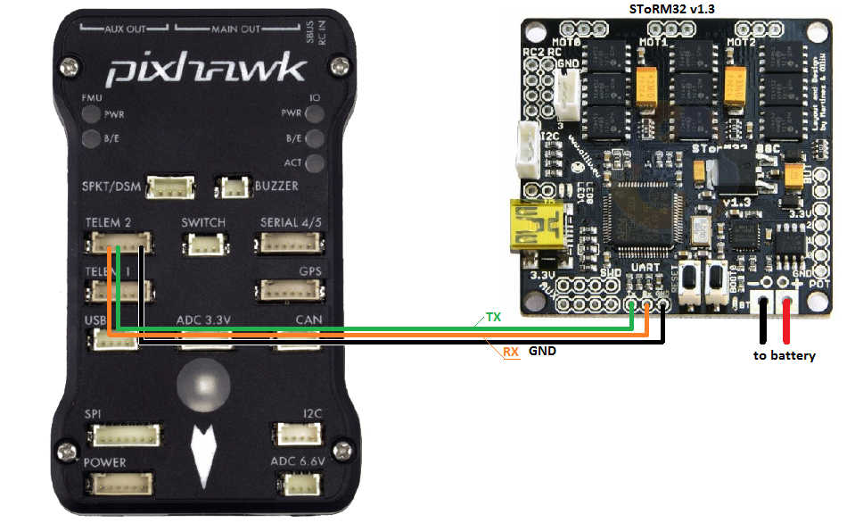
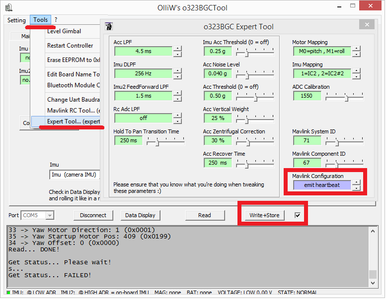
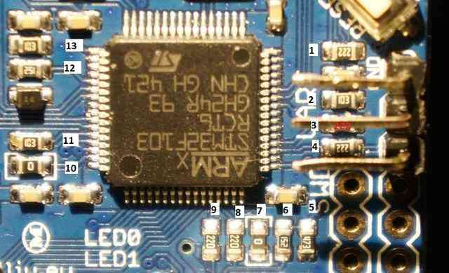

STorM32 Gimbal Controller¶
The STorM32-BGC is a relatively low-cost 3-axis brushless gimbal controller that can communicate with ArduPilot (Copter, Plane and Rover) using MAVLink or a proprietary serial protocol.
SToRM32 gimbals with I2C setups and firmware v0.96 should use the SToRM32 Serial driver
SToRM32 NT gimbals running firmware above v0.96 should use the SToRM32 MAVLink driver
Where to buy¶
Please refer to the STorM32-BGC wiki pages for more detailed information including where the gimbals can be purchased.
Warning
Some v1.3x boards has been found to cause significant RF interference on the 433mhz and 915mhz band. Use with caution, if you are using either 433/915mhz control or telemetry.
Connecting the gimbal to the autopilot¶
{kind=link}
Connect one of the autopilot’s serial port’s TX, RX and GND pins to the gimbal’s UART port as shown above. The autopilot’s serial port’s VCC, RTS and CTS pins should not be connected
Setup if using MAVLink protocol¶
In addition to the regular gimbal configuration described on the STorM32-BGC wiki, the MAVlink heartbeats should be enabled through OlliW’s o323BGCTool’s Tools | Expert Tool screen as shown below.
{kind=link}
Using a ground station (e.g. Mission Planner) set the following parameters. These setting assume Autopilot’s serial2 is being used. If another serial port is being used replace the “2” in the parameter name with the appropriate serial port number.
SERIAL2_BAUD = 115 (115200 bps).
SERIAL2_PROTOCOL = 1 (MAVLink1) or 2 (MAVLink2)
Optionally set BRD_SER2_RTSCTS = 0 to disable serial flow control
{kind=link}
if the first mount is being used, set the following parameters:
MNT1_TYPE = 4 (SToRM32 MAVLink) and reboot the autopilot
set MNT1_YAW_MIN, MNT1_YAW_MAX, MNT1_PITCH_MIN, MNT1_PITCH_MAX, MNT1_ROLL_MIN, MNT1_ROLL_MAX to match your gimbal’s range.
Optionally set RC6_OPTION = 213 to control the gimbal’s pitch from the transmitter’s ch6 tuning knob.
The screenshot below shows a setup in which the gimbal has:
360 of yaw rotation (MNT1_YAW_MIN = -180, MNT1_YAW_MAX = 179)
60 degrees (both left and right) of roll (MNT1_ROLL_MIN = -60, MNT1_ROLL_MAX = +60)
Can point straight down (MNT1_PITCH_MIN = -9000)
Can point straight up (MNT1_PITCH_MAX = +90)
Gimbal’s pitch is controlled by the transmitter’s channel 6 tuning knob
{kind=link}
Setup if using SToRM32 Serial protocol¶
To use the serial protocol use all the same settings as above except:
When Configuring the Gimbal controller set the “MAVLink configuration” parameter to “no heartbeat”
SERIAL2_PROTOCOL = 8 (SToRM32 Gimbal Serial). If another serial port is connected to the gimbal replace “2” with the serial port number
MNT1_TYPE = 5 (SToRM32 Serial)
Control and Testing¶
See Gimbal / Mount Controls for details on how to control the gimbal using RC, GCS or Auto mode mission commands
Resistor issue on some boards¶
Some in-depth analysis here on rcgroups turned up that some STorM32 boards need resistor #4 (shown in pic below) shorted (i.e. a wire soldered over the top of the resistor to turn it into a regular wire) in order for the gimbal controllers messages to get through to the Pixhawk.
{kind=link}